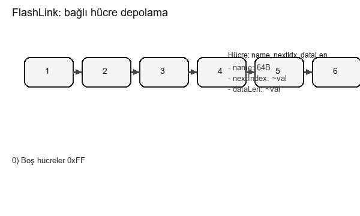

FlashLink — Linked-Cell Storage
Lightweight linked-cell model running in MCU internal flash. Ideal for customers with small storage needs; no external flash required.
- File data stored across multiple linked cells
- Header: name (64B), nextIndex, dataLen
- Delete: flash-safe tombstone-style header update
